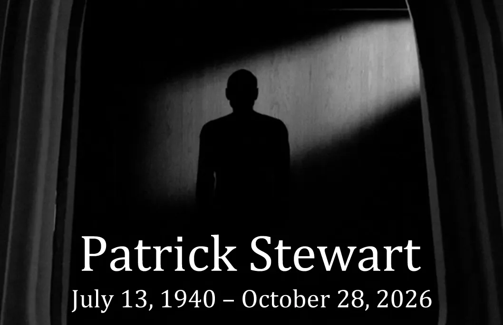

@c6reviews.
@c6reviews.How can I possibly pay sufficient respect to Sir Patrick Stewart? Born in Mirfield, Yorkshire, England in 1940, Stewart started his acting career as early as age 12. In 1966, he joined the Royal Shakespeare Company, and he made his Broadway debut in 1971 in a production of A Midsummer Night's Dream. He's received numerous accolades throughout his career, and he was knighted by Queen Elizabeth II in 2010.
But that is all biographical data you can find on any site remembering the actor. I would like to talk about his famed Star Trek character, Captain Jean‑Luc Picard, and how he affected my life. Picard was a brave explorer and accomplished diplomat, and he taught me how to be a good person. He preferred a measured approach when interacting with other cultures on a galactic stage, but he wasn't afraid to rattle his saber when necessary. His cool-headed and logical approach to diplomacy is something that shaped how I carry myself when working with others to this day. Star Trek: The Next Generation premiered when I was barely in kindergarten, and over the years Captain Jean-Luc Picard made me want to be that respected leader who others look to for stability and a strong moral compass.
This quote from TNG 2x02: Where Silence Has Lease seems to be an appropriate place to start. Here, Picard tries to explain the concept of death to Data, and I find his description to be very smart, and even comforting in its own way. To define an afterlife in corporeal terms or with opulent splendors often oversimplifies what must be an unknowable existence far beyond anything we can presently imagine. I take solace in the idea that Patrick Stewart is now a part of that magnificent tapestry which makes up our universe.
Just a few episodes later in TNG 2x09: The Measure of a Man, Picard defends Data's rights with this inspired courtroom speech. Captain Picard was not often a guns-blazing, risk-taking, daredevil superhero. Instead, his battles were often fought in a courtroom, a diplomatic encounter, or a tense negotiation. Instead of phasers and photon torpedoes, Picard's weapons of choice are his words, and they are just as effective, if not even more so. Here, Picard urges the court to consider the rights of an individual regardless of whether he is flesh and blood or plastic and wires. The lesson here is clearly applicable to any number of traits we can ascribe to a person today, noting that none of those traits should make a man ineligible to exercise his rights. Arguing on behalf of a vulnerable group or individual: this is the kind of man I aspire to be.
Even after playing a crucial role in establishing the rights for artificial life forms, Picard finds himself once again coming to the defense of his android operations officer, Data, in TNG 3x16: The Offspring. Picard's loyalty was never blindly applied to Starfleet rules and regulations, but instead to a higher, moral standard. Here, he stands up to an admiral, directly challenging his order to hand over Data's android daughter to Starfleet. I aspire to follow my heart in what I believe to be right, and I'd like to think that I'd have the courage to stand up for basic morality, even in the face of authority.
Another pearl of wisdom from our Captain in TNG 2x21: Peak Performance. Here, Picard explains the reality that even a perfect performance can result in a failure, but that it should be viewed as a fact of life and not a shortcoming.
This is one of my all-time favorite Picard quotes, because there is a cautionary lesson here, one that applies in any century, and one I find particularly applicable to current times and recent events. In TNG 4x21: The Drumhead, Admiral Satie is brought out of retirement to investigate an instance of possible sabotage on board the Enterprise. Captain Picard is, at first, happy to work with the renowned retired admiral. However, over the course of the investigation, Satie's suspicions become increasingly irrational at each step. She strays from logical deduction and into xenophobic paranoia, until she finally snaps at the idea of a conspiracy that exists only in her own mind. Along the road to her breakdown, she sought to bring down the lives of others right along with her. Others, like Mr. Worf, aided the admiral in her mission without seeing the warning signs, even as Picard started to sound the alarm early on. In this final scene between Picard and Worf, the captain explains the need for vigilance in the face of people like Satie.
In PIC 1x10: Et in Arcadia Ego, Part 2, Picard uses this quote in a eulogy for one of his dear friends. Since Patrick Stewart was a classically trained Shakespearean actor, this quote is especially appropriate to remember today.
Captain Picard was famous for this three-word phrase as part of his commanding officer lingo. Often used as a confirmation to carry out orders or follow a suggested plan, this phrase is also much more than that: it's an affirmation of life, akin to “seize the day”. Picard even once used it in a speech at the wedding of Will Riker and Deanna Troi, saying, “And in best maritime tradition, I wish you both clear horizons. My good friends, make it so.”
And so, in best maritime tradition, I now wish clear horizons to a man who helped make me who I am today: Patrick Stewart. May your tea, Earl Grey, forever be hot, and the lights forever be four (never five). See you... out there! ◼
